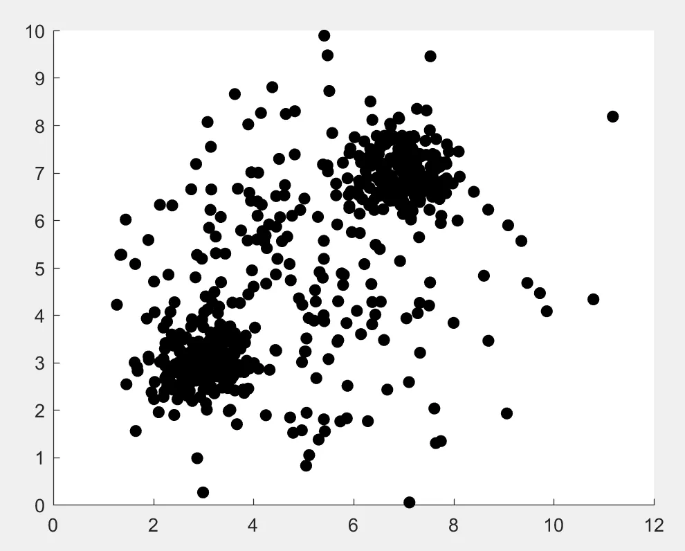

On Definitions
I would like to argue that the question Are viruses alive?
is a question about language, not about any objective fact about external reality, and that there is no correct answer. I’m sure there’s a standard name for this argument and I’d bet Wittgenstein has already talked about it, but I haven’t read any Wittgenstein so this is my personal attempt to articulate it. The impetus for writing this came from reading this article in Quanta Magazine and from a conversation about it on Twitter.
The distinction between living and nonliving was originally defined ostensively—that is, the meaning was conveyed by pointing out examples of living or nonliving things and hoping the distinction got across to the listener. Cows are alive, rocks aren’t; trees are, dirt isn’t. Do you see the pattern? We do not define life by enumerating every possible phenomenon and stating whether it is alive or not—we are only given a finite number of samples from which to build our intuitions. In other words, the definition is not extensive.
Because the definition is not extensive, when we are confronted with something that wasn’t one of the examples given to us, we have to make a decision. Is this thing more like the examples of living things I’ve been given, or more like the nonliving things? Usually this is easy; a dog moves, eats, and breathes, just like cows and cats, so it must be alive. But when we move further from the central examples, everything becomes murky. Is fire alive? Are snowflakes? Computers? Artificial intelligences? What about viruses?
Not having thought about things this way before, and tired of arguing about it, we decide we need to update the definition of life
to cover these new cases. The ultimate goal is to create an intensional definition—a list of defining characteristics that one can use to categorize any object as alive or not, even if you’ve never seen it before. If it has those characteristics it’s alive; if it doesn’t, then it’s not. Sometimes it is easy to see what a group of objects have in common and to construct an intensional definition. Other times, like in the case of life, it’s very difficult.
Consider the following plot. Each point represents a different kind of object; cats, dogs, cows, rocks, trees, viruses, et cetera. Their location is determined by their properties. Maybe the horizontal axis represents a measure of metabolism, and the vertical axis represents a measure of self-replication. It doesn’t really matter. What matters is that we can see two clusters. Let’s say the top-right one contains what we’d call living things, and the bottom-left one represents nonliving things. Animals, plants, bacteria, etc. are all in the top-right cluster, and rocks, dirt, stuffed animals, etc. are all in the bottom-left. The reason we came up with the life/non-life distinction in the first place is because these dense clusters exist. But there are more things in heaven and earth than are dreamt of in your philosophy; what do we do about the dots that don’t obviously belong in either cluster? Where do we draw the line that divides this plot into two groups?

Well, we can choose to divide it however we want! There are many possible intensive definitions that agree with our intuitions, but they disagree with each other about the edge cases. In other words, there are many curves one could draw on the above graph that would separate the two major clusters from each other, but which would disagree about which side the other dots fall on. This is fine—there’s no right answer. Whether to call viruses or artificial intelligences life
is a subjective choice, based more on convenience and utility than any objective fact about the world.
But this is where the problem occurs. Some people think that our old, intuitive, ostensively-defined concept of life must have secretly been referring to an intensional definition the whole time. They believe there must be a true
way to define life, the one we really mean when we talk about life, and that there really is a fact of the matter about whether viruses are alive, independent of human definitions. As if there are little tags on every object in the universe that say living
and nonliving
that we could see if only we had more powerful microscopes and cleverer philosophers working on the issue. As if there’s one true, obviously correct curve to draw between the two clusters and all other lines are wrong.
But life
is not a natural category. It’s a convenient way of categorizing phenomena that has proven especially useful to humans. There were two distinct clusters in that plot, after all, so living
and nonliving
were very good concepts to have. But that doesn’t mean the universe cares about the exact line where we draw the boundary. The universe doesn’t care if we choose an intensional definition of life that includes or excludes viruses. A good argument could be made for either case.
If you have a definition of life that excludes viruses and I have a definition that includes them, we are not actually arguing over any fact about the material world—we’re not arguing about whether the dot that represents viruses in the above plot is drawn in the wrong place. Rather, we’re arguing over how to draw an imaginary line to categorize things. We’re playing a language game. I think this sort of problem shows up all the time in philosophy. Consider the endless arguments about the true meaning of justice, love, good, evil, etc. I guarantee if you internalize this pattern you will see it everywhere. ❦